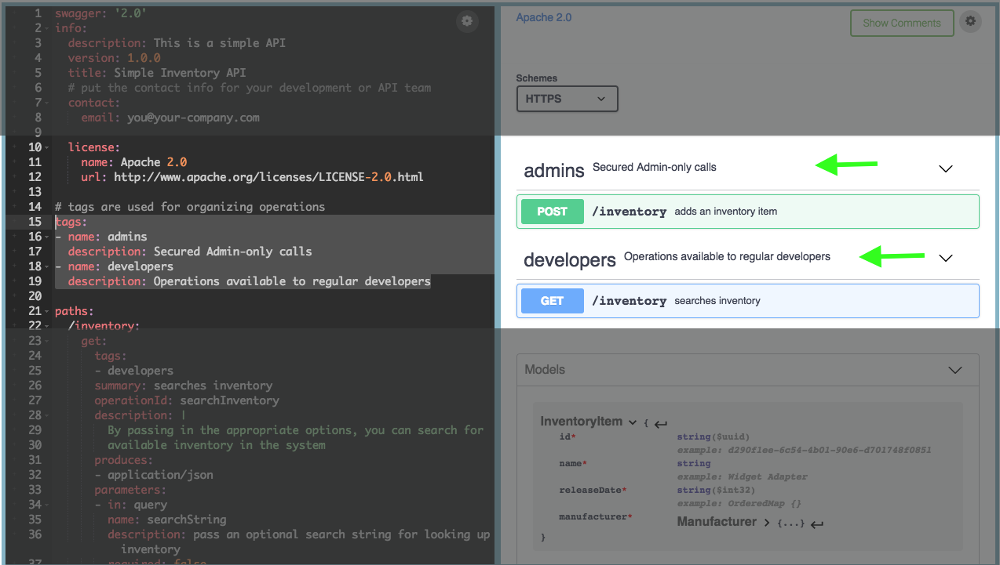
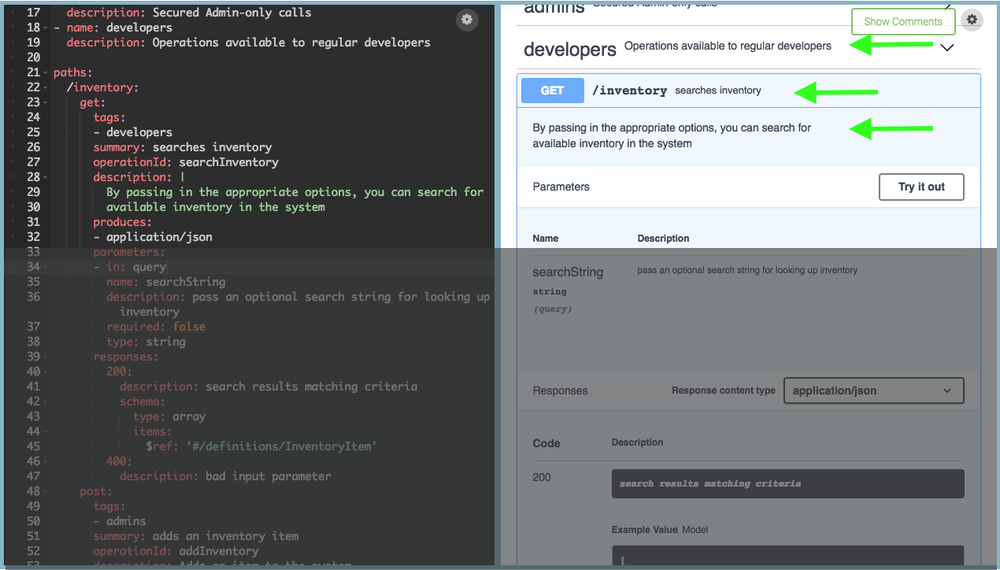
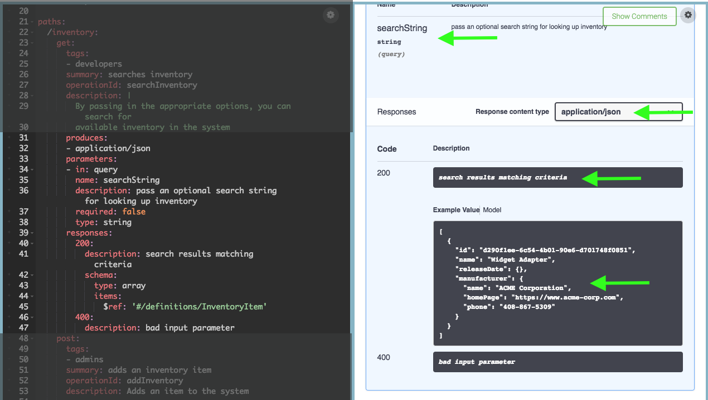
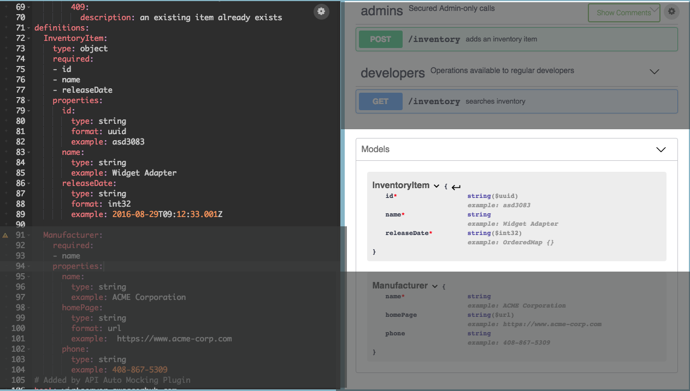

class: center, middle # Swagger ## Documenting REST APIs --- # API Documentation The REST guidelines allow for quick understanding of an API, but we still need some basic info about endpoints, resources, etc. In other words, we need API documentation. -- Fortunately, the common aspects of REST APIs make this a relatively easy task. --- ## OpenAPI Specification - A specification for a file format that can define a RESTful API -- - Began development in 2010 as part of the Swagger project, which also included tools for documentation and generating APIs -- - Became an independent project (OpenAPI initiative) in 2015, housed under the Linux Foundation -- - Documented at [https://swagger.io/docs/specification/about/](https://swagger.io/docs/specification/about/) --- ## Swagger -- * API documentation tool used extensively by the NGA -- * Designed to assist in creating OpenAPI-compliant REST services -- * Config files are OpenAPI definition files, and can be written in YAML or JSON -- * [Example](http://petstore.swagger.io/#/) of a Swagger-generated API documentation site --- ## Using Swagger Swagger is a toolset for generating APIs and documentation. -- Use Cases: -- * **Documentation Tool** (SwaggerUI): easily describing the API by creating OpenAPI definition files -- * **Self-Documenting** (Springfox): creates the documentation based on annotations within the code -- * **Code Generation** (Swagger Codegen): you write the description and it generates the code -- **Our Focus**: Swagger as a documentation tool (manual and self-documenting) --- ## How it Works * Create a YAML or JSON file -- * In the file, define all paths / endpoints for the API -- * In the file, define all responses for each endpoint -- * Swagger uses JavaScript to parse the config file and display HTML --- ## YAML YAML = "Yet Another Markup Language". YAML is very similar to JSON, but is less verbose -- Here is a list: ``` fruits: - Apples - Oranges - Grapes ``` -- Here is a dictionary (key-value pair) ``` martin: name: Martin Developer job: Developer ``` --- ## YAML Swagger Config There are 5 important sections to a Swagger config -- ``` swagger: '2.0' # 2.0 or 3.0 info: # high level information about your API tags: # resources in your API paths: # endpoints in your API definitions: # reusable definitions ``` --- ## YAML Config - API Info ``` info: description: This is a simple API # description version: 1.0.0 # version of API title: Simple Inventory App # your application name contact: email: you@your-company.com # your email license: name: Apache 2.0 url: http://www.apache.org/licenses/LICENSE-2.0.html ``` --- ## YAML Config - API Info  --- ## YAML Config - Tags ``` tags: # tags provide a summary about endpoints - name: admins description: Secured Admin-only calls - name: developers description: Operations available to regular developers ``` --- ## YAML Config - Tags Tags group your endpoints and provide extra details.  --- ## YAML Config - Paths ``` paths: /inventory: # endpoint URL get: # HTTP method tags: # determines the header) - developers # matches with 'tag' section summary: searches inventory operationId: searchInventory description: | # | means multi line text string By passing in the appropriate options, you can search for available inventory in the system produces: # one or more content types - application/json ... ``` --- ## YAML Config - Paths Note: An operation is listed under each tag it is assigned (operations may have multiple tags)  --- ## YAML Config - Paths ``` paths: ... parameters: # one or more query parameters - in: query name: searchString description: pass an optional search string for looking up inventory required: false type: string responses: # one or more reponse codes 200: description: search results matching criteria schema: type: array items: # vvv references a definition vvv $ref: '#/definitions/InventoryItem' 400: description: bad input parameter ``` --- ## YAML Config Tags group your endpoints and provide extra details.  --- ## YAML Config - Definitions ``` definitions: InventoryItem: type: object required: # list of all fields - id - name properties: # each field defined id: type: string format: uuid example: asd3083 name: type: string example: Widget Adapter ``` --- ## YAML Config - Definitions  --- ## YAML Config - Referencing Definitions Using `$ref` allows you to reuse pieces of YAML from definitions. This verbose spec of the schema of a response... ``` schema: type: array items: type: object required: -id -name ... ``` --- ## YAML Config - Referencing Definitions ...*is the same as* this one that references a definition. ``` schema: type: array items: $ref: '#/definitions/InventoryItem' ... definitions: InventoryItem: type: object required: ... ```